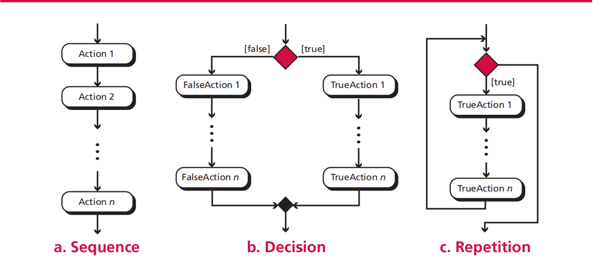
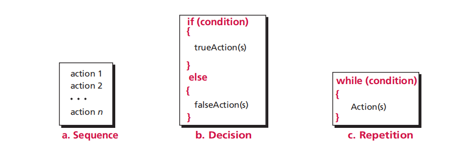
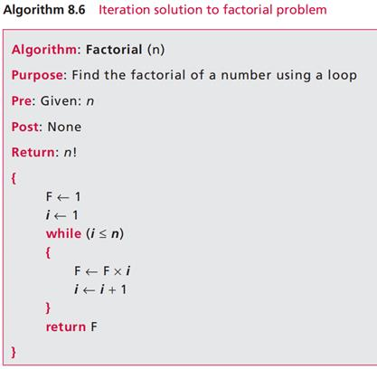
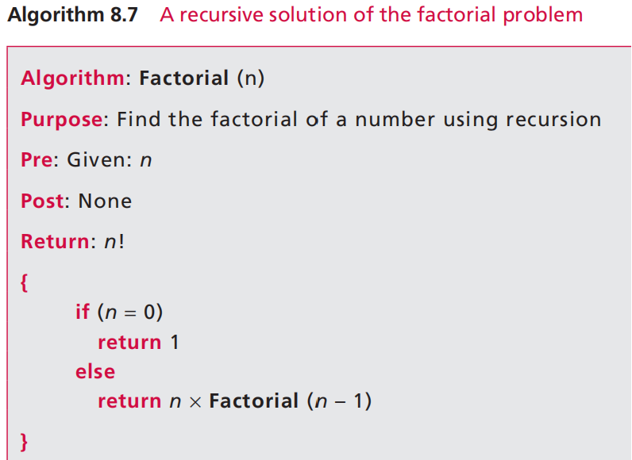

Algorithms are a step-by-step method for solving a problem or performing a task that accepts a list of input data and creates a list of output data.
Example: Develop an algorithm to find the largest number among all numbers given. (FindLargest)
Flowchart
Algorithms can be represented using flowcharts. UML (Unified Modeling Language) hides all the details of algorithms in an attempt to give a “big picture” and to show how an algorithm flows from beginning to end.
Pseudocode
After having a general understanding of algorithms, it’s time to make a formal introduction.
An ordered set of unambiguous steps that produces a result and terminates in a finite time.
Subalgorithms stop when they become intrinsic (understood immediately).
Benefits: More understandable and can be reused without being rewritten.
A high-level design tool shows the relationship between different modules in an algorithm.
Merits: Simplest algorithms to understand and analyze. Foundation of more efficient algorithms.
Demerits: They are the least efficient sorting algorithms.
A common algorithm is searching, which is the process of finding the location of a target.
For not ordered lists. Used for small lists. Find target through one-by-one checking.
For sorted lists. Used for large lists. Similar to dichotomy.
Algorithms = Iterations + Recursion
 An algorithm is iterative whenever the definition does not involve the algorithm itself. In recursive solutions, there is no need for a loop; you let the algorithm factorial itself.